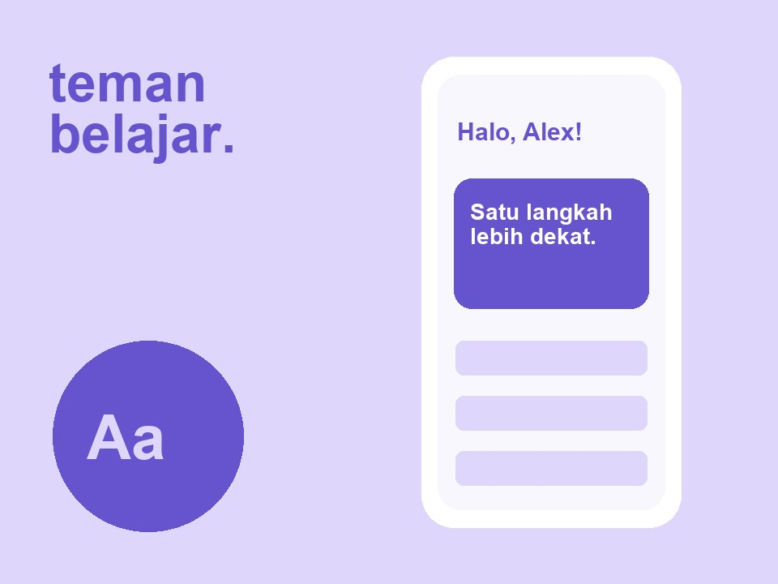
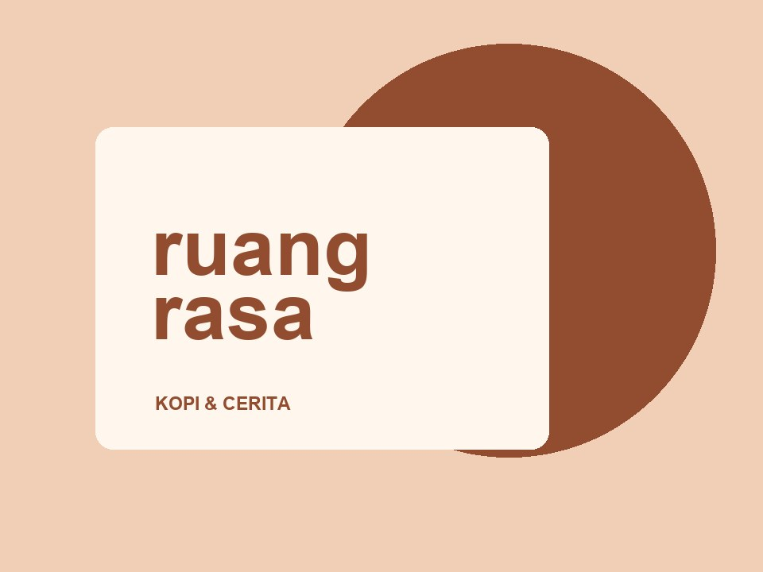
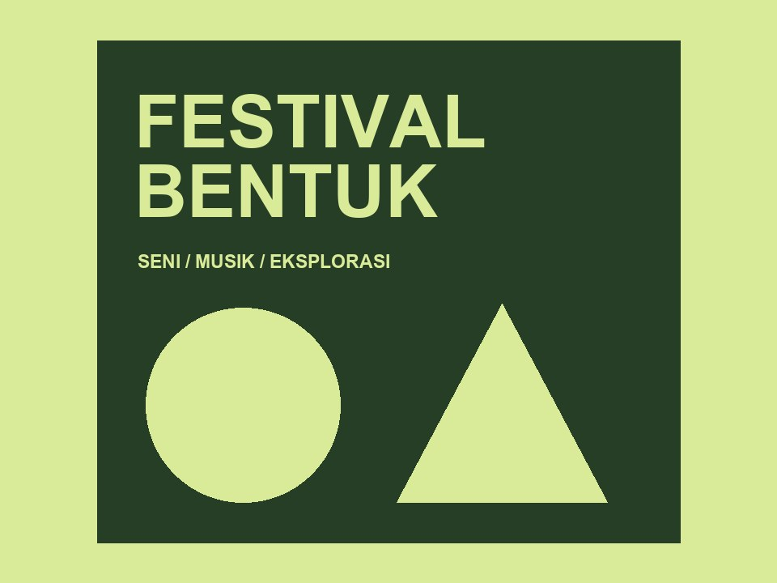
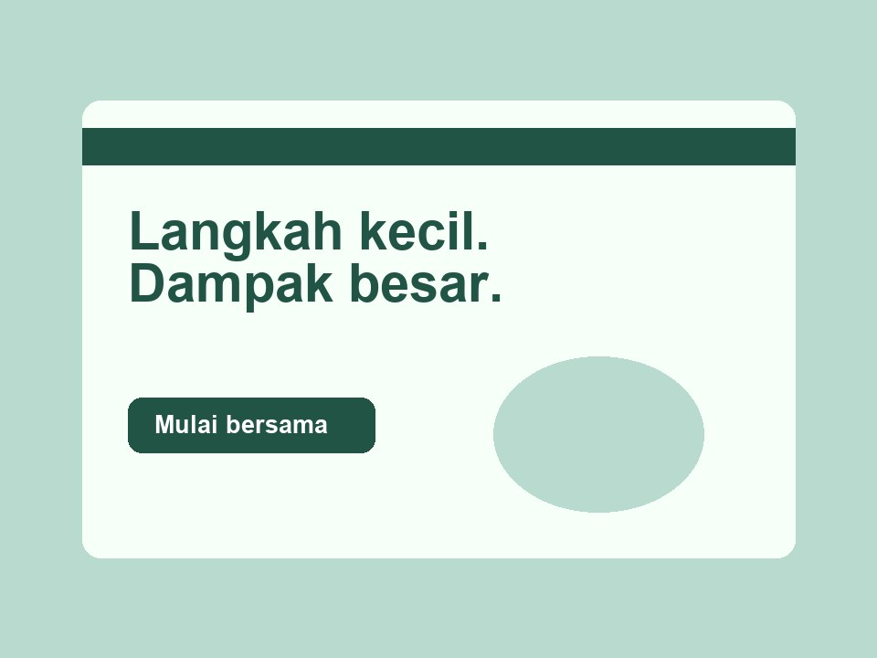
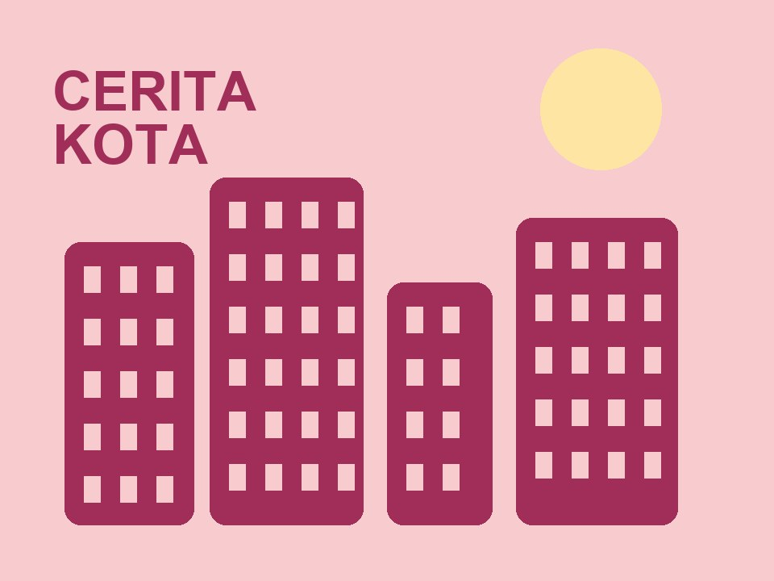
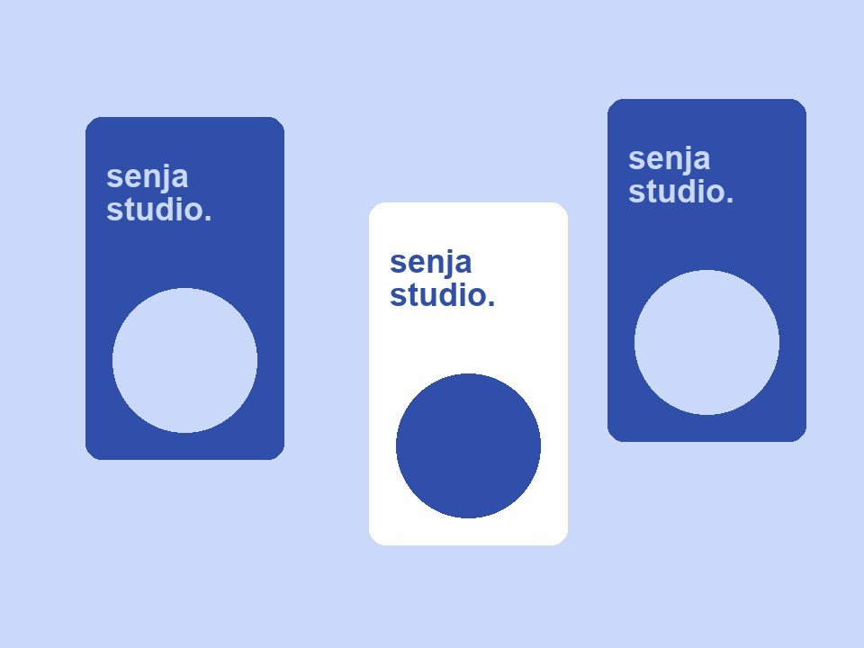

UI/UX
Teman Belajar
Aplikasi belajar yang membantu siswa mengatur tugas dan waktu belajar.
Lihat gambar ↗PORTFOLIO / 06 KARYA
Ide, proses, dan hasil selama perjalanan belajar saya. Pilih gambar untuk melihat lebih dekat.

Aplikasi belajar yang membantu siswa mengatur tugas dan waktu belajar.
Lihat gambar ↗
Identitas visual kedai kopi yang hangat dan dekat dengan pelanggan.
Lihat gambar ↗

Website komunitas untuk memulai kebiasaan yang ramah lingkungan.
Lihat gambar ↗

Semua karya di template ini adalah contoh. Ganti dengan karya Anda sendiri.